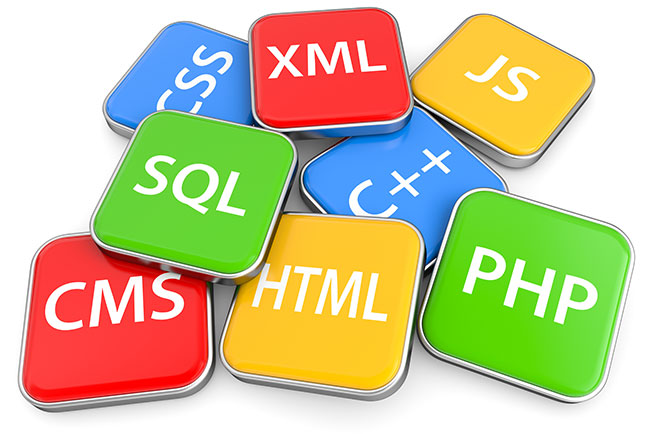

In informatica JavaScript è un linguaggio di programmazione orientato agli oggetti e agli eventi, comunemente utilizzato nella programmazione Web lato client (esteso poi anche al lato server) per la creazione, in siti web e applicazioni web, di effetti dinamici interattivi tramite funzioni di script invocate da eventi innescati a loro volta in vari modi dall'utente sulla pagina web in uso (mouse, tastiera, caricamento della pagina ecc...).
Tali funzioni di script, utilizzati dunque nella logica di presentazione, possono essere opportunamente inserite in file HTML, in pagine JSP o in appositi file separati con estensione .js poi richiamati nella logica di business. Ultimamente il suo campo di utilizzo è stato esteso alle cosiddette Hybrid App (app ibride), con le quali è possibile creare app per più sistemi operativi utilizzando un unico codice sorgente basato appunto su JavaScript, HTML e CSS.
Fu originariamente sviluppato da Brendan Eich della Netscape Communications con il nome di Mochan e successivamente di LiveScript, ma in seguito è stato rinominato "JavaScript" ed è stato formalizzato con una sintassi più vicina a quella del linguaggio Java di Sun Microsystems (che nel 2010 è stata acquistata da Oracle). JavaScript è stato standardizzato per la prima volta il 1997 dalla ECMA con il nome ECMAScript. L'ultimo standard, di giugno 2017, è ECMA-262 Edition 8[1]. È anche uno standard ISO (ISO/IEC 16262).In informatica l'HyperText Markup Language (traduzione letterale: linguaggio a marcatori per ipertesti), comunemente noto con l'acronimo HTML, è un linguaggio di markup. Nato per la formattazione e impaginazione di documenti ipertestuali disponibili nel web 1.0, oggi è utilizzato principalmente per il disaccoppiamento della struttura logica di una pagina web (definita appunto dal markup) e la sua rappresentazione, gestita tramite gli stili CSS per adattarsi alle nuove esigenze di comunicazione e pubblicazione all'interno di Internet[3].
L'HTML è un linguaggio di pubblico dominio, la cui sintassi è stabilita dal World Wide Web Consortium (W3C). È derivato dall'SGML, un metalinguaggio finalizzato alla definizione di linguaggi utilizzabili per la stesura di documenti destinati alla trasmissione in formato elettronico. La versione attuale, la quinta, è stata rilasciata dal W3C nell'ottobre 2014.
Il motivo principale che ha spinto il W3C e i suoi membri a sviluppare HTML5 è stata la necessità di fornire direttamente le funzionalità che in precedenza erano fruibili tramite estensioni proprietarie all'esterno dei browser, come Adobe Flash e simili. Un secondo obiettivo che gli sviluppatori si erano prefissati era quello di garantire una maggiore compatibilità tra i diversi browser, indipendentemente dalla piattaforma software utilizzata, e principalmente mirata all'espansione dei dispositivi mobili.[3]Il CSS (sigla di Cascading Style Sheets, in italiano fogli di stile a cascata), in informatica, è un linguaggio usato per definire la formattazione di documenti HTML, XHTML e XML, ad esempio i siti web e relative pagine web. Le regole per comporre il CSS sono contenute in un insieme di direttive (Recommendations) emanate a partire dal 1996 dal W3C.
L'introduzione del CSS si è resa necessaria per separare i contenuti delle pagine HTML dalla loro formattazione o layout e permettere una programmazione più chiara e facile da utilizzare, sia per gli autori delle pagine stesse sia per gli utenti, garantendo contemporaneamente anche il riutilizzo di codice ed una sua più facile manutenzione.
Python è un linguaggio di programmazione di più "alto livello" rispetto alla maggior parte degli altri linguaggi. È orientato a oggetti, ma non in maniera ferrea come ad esempio Java; adatto, tra gli altri usi, a sviluppare applicazioni distribuite, scripting, computazione numerica e system testing.
Fu ideato da Guido van Rossum all'inizio degli anni novanta. Il nome fu scelto per la passione dello stesso inventore verso i Python e per la loro serie televisiva Monty Python's Flying Circus[1]. Python è spesso paragonato a Ruby, Tcl, Perl, Java, JavaScript, Visual Basic o Scheme[2].
Spesso viene anche studiato tra i primi linguaggi per la sua somiglianza a uno pseudo-codice e di frequente viene usato per simulare la creazione di software grazie alla flessibilità di sperimentazione consentita da Python, che permette al programmatore di organizzare le idee durante lo sviluppo, come per esempio il creare un gioco tramite Pygame o un social-network tramite Flask.